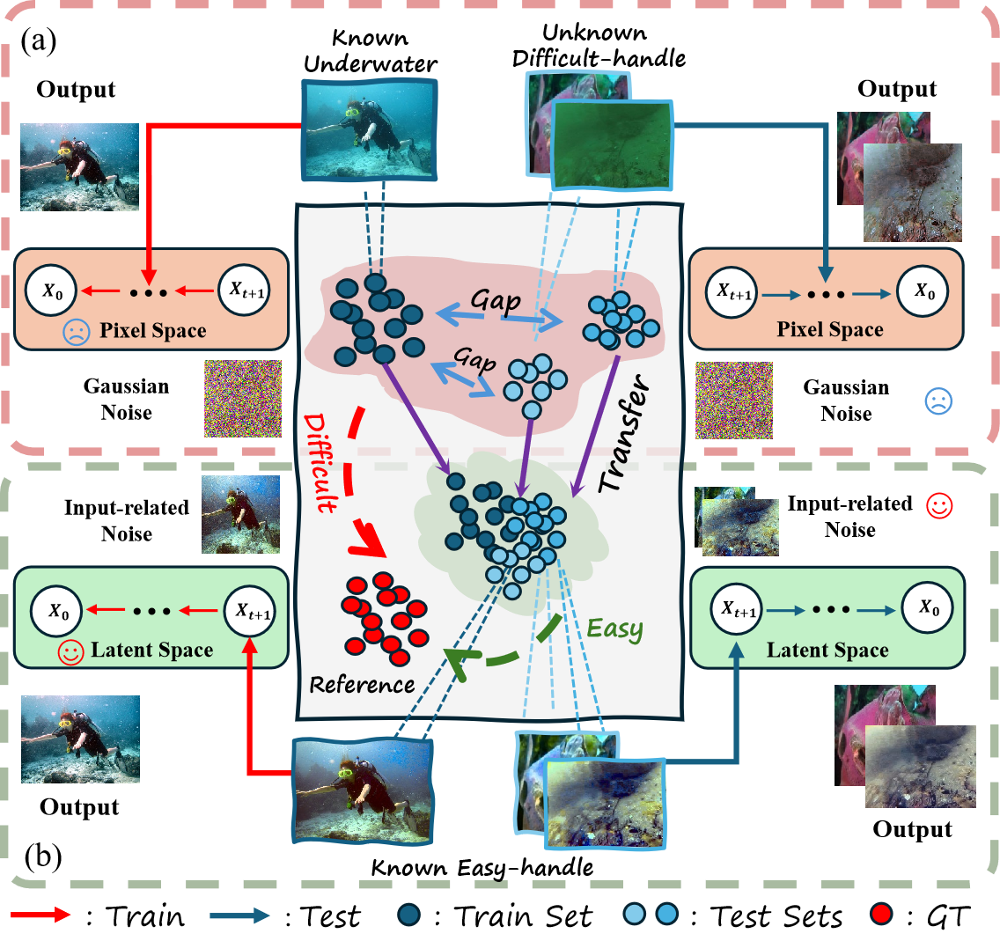

🔥 A More Generalizable Underwater Enhancement Method 🔥
We propose a novel diffusion-based underwater image enhancement (UIE) framework that integrates water-to-water domain aggregation with latent space operations to achieve superior generalization and enhancement performance. This design effectively addresses critical limitations of existing diffusion-based UIE methods, particularly their susceptibility to distribution shifts and semantic inconsistencies.
To further validate the robustness and applicability of our approach, we present representative enhancement results across six common and challenging degradation scenarios: yellowish haze, greenish casts, light blue attenuation, deep blue absorption, low-light conditions, and fog-like veils.
Abstract
Underwater optical imaging constitutes a crucial modality for acquiring marine information and plays an indispensable role in a wide range of fields, including ocean engineering, subsea resource exploration,
and geoscience and remote sensing. Maintaining consistent performance in supervised underwater image enhancement (UIE) models across
diverse real-world scenarios is challenging due to the inherent complexity of underwater environments and the limited availability of
diverse datasets. To address this, we propose a novel UIE framework that adaptively and training-free transforms complex underwater
images into more manageable known degraded images. This process effectively preserves the semantic content of the input images. Subsequently, we employ diffusion to transition from the known degraded domain distribution to the target reference domain distribution,
thereby achieving effective and consistent enhancement across various underwater scenarios. To ensure the efficacy and flexibility of the
diffusion process, our approach operates in latent space rather than pixel space,
utilizing a novel Markov chain specifically tailored for underwater scenes. This method not only reduces the numerous sampling steps but also minimizes color shifts during the sampling process.
Furthermore, we introduce a Content Consistency Module (CCM) to improve structural consistency. Experimental results demonstrate that W2WDiff outperforms state-ofthe-art methods,
exhibiting robust zero-shot generalization capabilities.
Motivation

Comparison between Previous Diffusion-Based UIE Models and Our W2WDiff Framework.
(a) General diffusion-based UIE models directly learn a supervised mapping from the underwater degradation domain D to the reference domain R ,
often struggling with domain shifts across different datasets. (b) Our proposed W2WDiff framework
introduces an unsupervised water-to-water transformation, which first maps the original underwater domain D to an intermediate,
more tractable underwater domain D' . This common underwater space bridges the distribution gap between diverse training and testing datasets,
ensuring more effective adaptation. A diffusion model is then employed to reconstruct the reference domain R from D' .
By leveraging this intermediate transformation, our approach mitigates domain mismatches and
enhances zero-shot generalization across various underwater environments.
More Visual Comparisons
In this section, we present additional qualitative results that could not be included in the main paper due to space limitations.
Specifically, visualizations on the out-of-distribution EUVP , U45 and UCCS datasets demonstrate the strong generalization capability of our method.
Moreover, comparisons on the more challenging C60 dataset reveal that our approach consistently yields superior visual results compared to existing methods.
Visual comparisons on the challenging C60 dataset. Our method achieves superior visual enhancement under extremely adverse conditions, including low-light environments, compound degradation types, and turbid water. The results demonstrate robust detail preservation and effective color correction, validating the method capability in real-world, high-complexity underwater scenarios.
Generalization performance on out-of-distribution datasets EUVP and U45. Compared with baseline and diffusion-based methods, our approach exhibits strong generalization and robustness across diverse domains. It effectively enhances distant regions, seabed textures,
and areas with scattered sediments, features typically overlooked by existing methods, demonstrating its adaptability to varying underwater distributions.
Enhancement consistency on the UCCS dataset. Our method maintains consistent enhancement across frames,
addressing the stochasticity and semantic instability commonly observed in diffusion-based UIE methods.
This consistency is particularly critical for video-based applications,
underscoring the reliability and temporal stability of our framework.